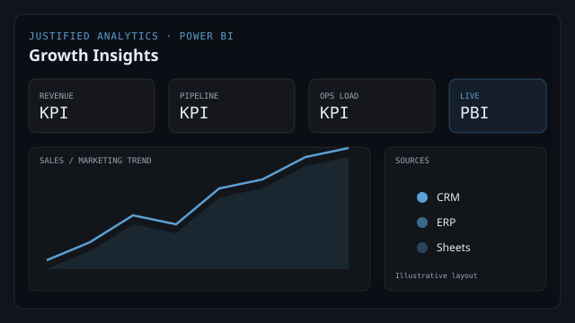
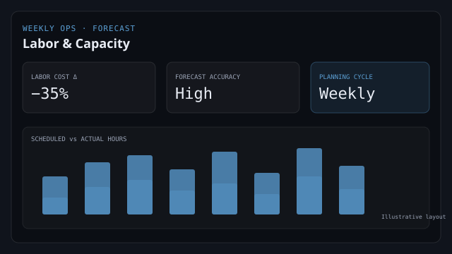
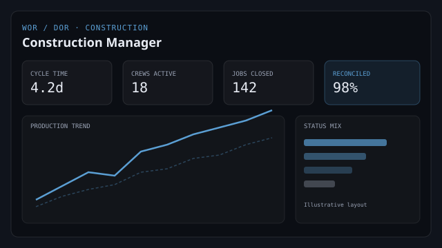
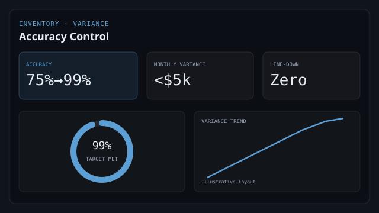
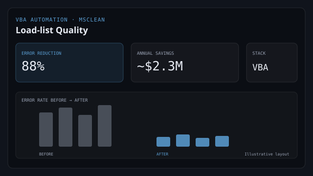

Custom Power BI dashboards
Browser-hosted, interactive reports — no viewer licenses needed for stakeholders.
Work samples · Selected work
BI systems and operational programs I’ve built — from Justified Analytics (founder practice) to construction analytics, labor forecasting, inventory control, and process automation.
A BI practice I built — data that works as hard as you do. Historical offerings and delivery model below.
Practice I built · founder-led BI
Custom Power BI dashboards, data pipelines, and ops automation for teams that need clarity without enterprise bloat. Delivery: connect data → define vision (30 min) → build in 1–2 weeks for starter engagements.
Browser-hosted, interactive reports — no viewer licenses needed for stakeholders.
Source integration and modeling; cloud repo when the engagement needs durable pipelines.
Reduce manual reporting loops so operators spend time deciding, not reconciling.
Sales, marketing, and ops views that surface where to invest next.
Conversational intake → package recommendation → summary routed to Justin. Built to qualify leads without a sales funnel tax.





Problem → approach → outcome from career roles across construction BI, ops planning, automation, and inventory.
PG&E / Evergreen · Current
Peaxy
Stuart Event Rentals
MSC · MsClean
CEVA Logistics · Tesla contract